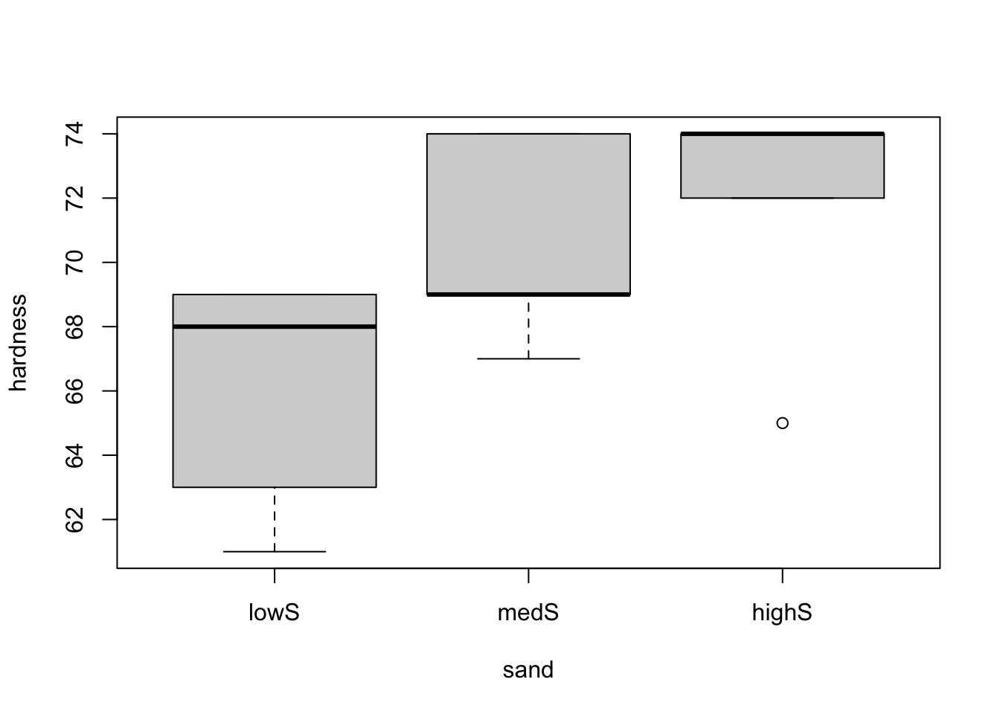
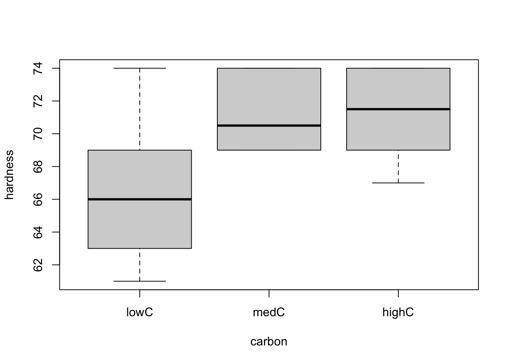
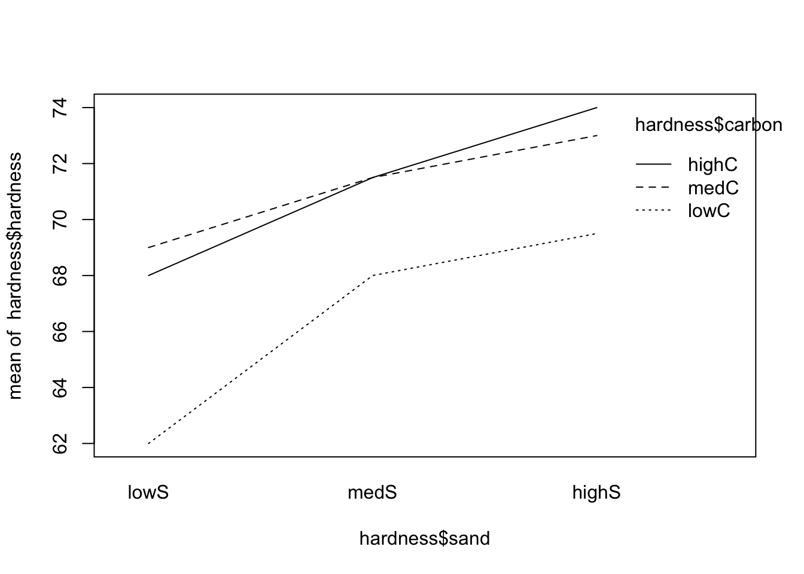
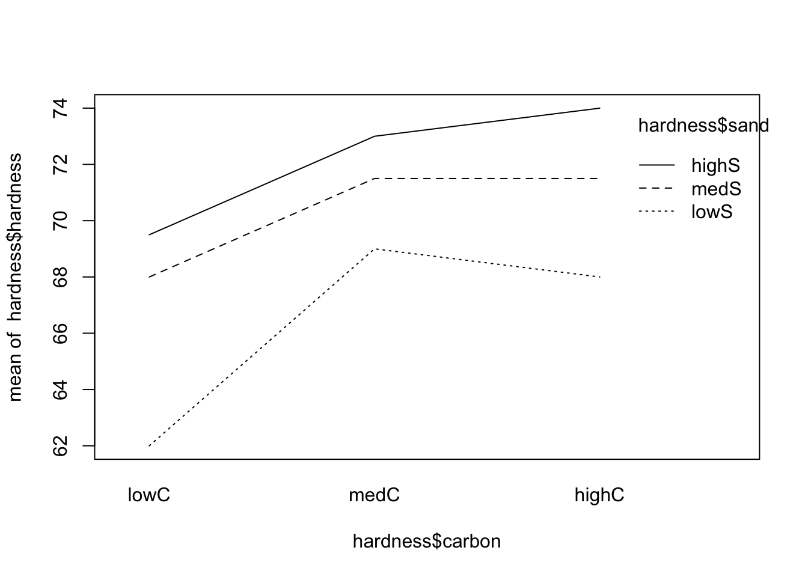
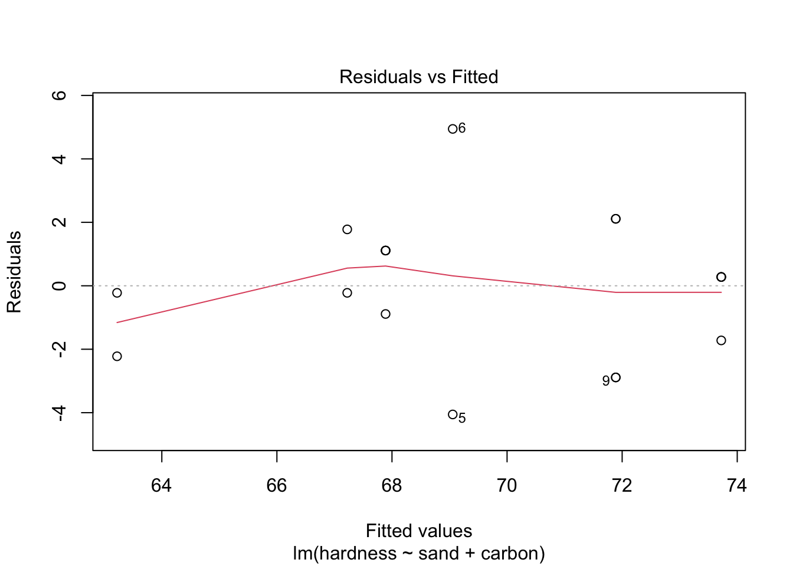
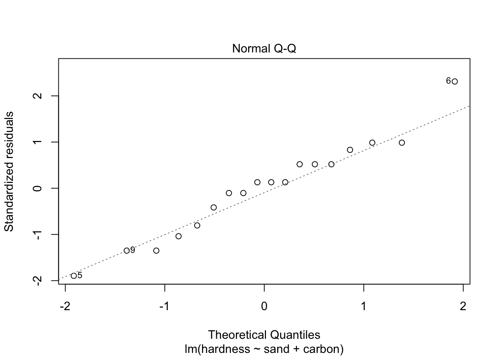
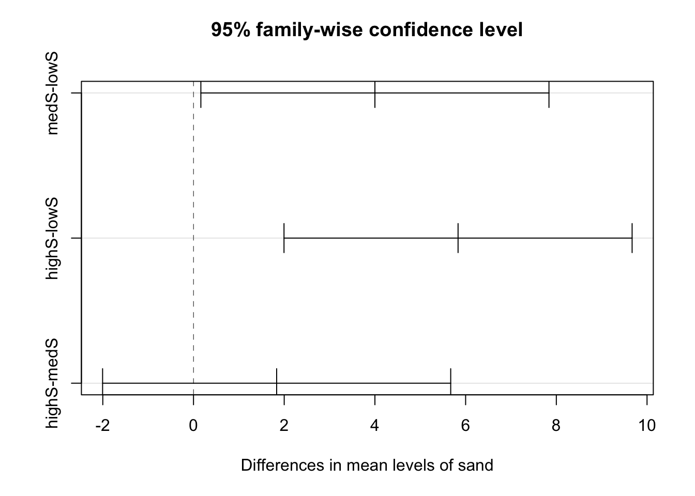
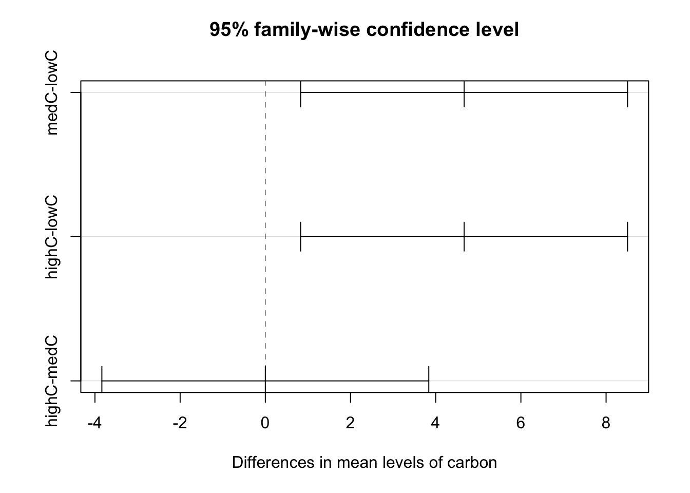

For this problem, we will study how the amount of carbon fiber and sand additions affect the hardness of a certain material. You can download the .csv file here.
This data set contains following the variables:
sand (multi-valued discrete)carbon (multi-valued discrete)hardness (continuous)In order to explore the data set and perform initial analyses, we have to read it (with R) first. Provided that the .csv file is saved within the datasets/ folder, one can read the file in the following way.
col.names <- c('sand', 'carbon', 'hardness')
hardness <- read.csv(file = 'datasets/hardness.csv', header = FALSE, sep = ',', col.names = col.names)
head(hardness, 5)## sand carbon hardness
## 1 0 0 61
## 2 0 0 63
## 3 15 0 67
## 4 15 0 69
## 5 30 0 65Now, let’s see a summary of our data.
summary(hardness)## sand carbon hardness
## Min. : 0 Min. :0.00 Min. :61.00
## 1st Qu.: 0 1st Qu.:0.00 1st Qu.:67.50
## Median :15 Median :0.25 Median :69.00
## Mean :15 Mean :0.25 Mean :69.61
## 3rd Qu.:30 3rd Qu.:0.50 3rd Qu.:74.00
## Max. :30 Max. :0.50 Max. :74.00As one can see from the above table, the multi-valued discrete attributes are being interpreted as numeric; however, we should set them as factor. For changing them, we can do the following
hardness$sand <- factor(hardness$sand, levels = c(0, 15, 30), labels = c('lowS', 'medS', 'highS'))
hardness$carbon <- factor(hardness$carbon, levels = c(0.00, 0.25, 0.50), labels = c('lowC', 'medC', 'highC'))
summary(hardness)## sand carbon hardness
## lowS :6 lowC :6 Min. :61.00
## medS :6 medC :6 1st Qu.:67.50
## highS:6 highC:6 Median :69.00
## Mean :69.61
## 3rd Qu.:74.00
## Max. :74.00Once we have the data, we can do a few plots that might help us understanding our problem. We can start by doing two different boxplots for the two categorical variables.
boxplot(hardness ~ sand, data = hardness)
boxplot(hardness ~ carbon, data = hardness) From both plots, it seems like there is a difference in one of the treatments (low doses for both sand and carbon) regarding the hardness of the material. However, we should only analyse the two factors separately if we can conclude that there is no interaction between them, meaning that there is no partial effect of one factor over the other. To see this, let’s use the interaction.plot() function to explore the possible interactions between the factors.
interaction.plot(x.factor = hardness$sand, trace.factor = hardness$carbon, response = hardness$hardness)
interaction.plot(x.factor = hardness$carbon, trace.factor = hardness$sand, response = hardness$hardness)
From the both plots above, the interactions (if any) do not seem to be important (since the lines are, more or less, parallel). As an important side note, if there is no interaction, the main effects (if significant) will tell us if there is variation among the levels of the factor in question; however, if modeled with interaction, the main effects may be difficult to be correctly explored and should be avoided. In this case, one may simply consider all pairs of levels as separate treatments.
So let’s start by fitting our complete model.
model <- lm(formula = hardness ~ sand * carbon, data = hardness)
anova(model)## Analysis of Variance Table
##
## Response: hardness
## Df Sum Sq Mean Sq F value Pr(>F)
## sand 2 106.778 53.389 6.5374 0.01764 *
## carbon 2 87.111 43.556 5.3333 0.02967 *
## sand:carbon 4 8.889 2.222 0.2721 0.88870
## Residuals 9 73.500 8.167
## ---
## Signif. codes: 0 '***' 0.001 '**' 0.01 '*' 0.05 '.' 0.1 ' ' 1As we can see from the above table (and p-values), we reject the hypothesis “sand have no significant effect on hardness”, we reject the hypothesis “carbon have no significant effect on hardness”, as we fail to reject the hypothesis “sand and carbon interaction have no significant on hardness”. Thus, we can fit the following simplified model
model2 <- lm(formula = hardness ~ sand + carbon, data = hardness)
anova(model2)## Analysis of Variance Table
##
## Response: hardness
## Df Sum Sq Mean Sq F value Pr(>F)
## sand 2 106.778 53.389 8.4241 0.004505 **
## carbon 2 87.111 43.556 6.8726 0.009195 **
## Residuals 13 82.389 6.338
## ---
## Signif. codes: 0 '***' 0.001 '**' 0.01 '*' 0.05 '.' 0.1 ' ' 1Now, as before, we can compute the estimated means and effects for sand and carbon from hardness ~ sand + carbon.
modAOV <- aov(formula = hardness ~ sand + carbon, data = hardness)
model.tables(modAOV, 'means')## Tables of means
## Grand mean
##
## 69.61111
##
## sand
## sand
## lowS medS highS
## 66.33 70.33 72.17
##
## carbon
## carbon
## lowC medC highC
## 66.50 71.17 71.17# Effects
model.tables(modAOV)## Tables of effects
##
## sand
## sand
## lowS medS highS
## -3.278 0.722 2.556
##
## carbon
## carbon
## lowC medC highC
## -3.1111 1.5556 1.5556Next, let’s do a residual analysis, so that we can make sure that our assumptions hold. We will plot the “Residuals vs. Fitted” and “Normal Q-Q” graphs, and conduct the appropriate tests, namely, ncvTest() (notice it is not the same as leveneTest()) and shapiro.test() (for resid()), for the equal variance and normally distributed residuals assumptions, respectively.
plot(model2, which = c(1, 2))
library('car')
ncvTest(model2)## Non-constant Variance Score Test
## Variance formula: ~ fitted.values
## Chisquare = 0.000267911, Df = 1, p = 0.98694shapiro.test(resid(model2))##
## Shapiro-Wilk normality test
##
## data: resid(model2)
## W = 0.96901, p-value = 0.779As the p-values are large for both tests, the assumptions seem to hold. Also, the plots allow us to conclude the same. Therefore, model2 might correctly model our problem.
Also, as before, we can also do a pairwise analysis.
(modTuk <- TukeyHSD(modAOV))## Tukey multiple comparisons of means
## 95% family-wise confidence level
##
## Fit: aov(formula = hardness ~ sand + carbon, data = hardness)
##
## $sand
## diff lwr upr p adj
## medS-lowS 4.000000 0.1622397 7.837760 0.0408237
## highS-lowS 5.833333 1.9955730 9.671094 0.0039170
## highS-medS 1.833333 -2.0044270 5.671094 0.4403222
##
## $carbon
## diff lwr upr p adj
## medC-lowC 4.666667 0.8289063 8.504427 0.0174826
## highC-lowC 4.666667 0.8289063 8.504427 0.0174826
## highC-medC 0.000000 -3.8377603 3.837760 1.0000000plot(modTuk)
Finally, the predicted values for each combination of level of sand and carbon can be computed using the predict() function.
(newdata <- data.frame(sand = factor(rep(c('lowS', 'medS', 'highS'), each = 3)), carbon = factor(rep(c('lowC', 'medC', 'highC'), times = 3))))## sand carbon
## 1 lowS lowC
## 2 lowS medC
## 3 lowS highC
## 4 medS lowC
## 5 medS medC
## 6 medS highC
## 7 highS lowC
## 8 highS medC
## 9 highS highCnewdata$predict <- predict(model2, newdata = newdata)
newdata## sand carbon predict
## 1 lowS lowC 63.22222
## 2 lowS medC 67.88889
## 3 lowS highC 67.88889
## 4 medS lowC 67.22222
## 5 medS medC 71.88889
## 6 medS highC 71.88889
## 7 highS lowC 69.05556
## 8 highS medC 73.72222
## 9 highS highC 73.72222